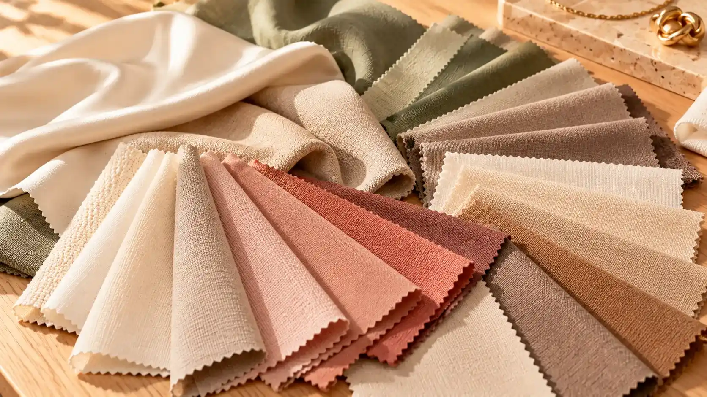
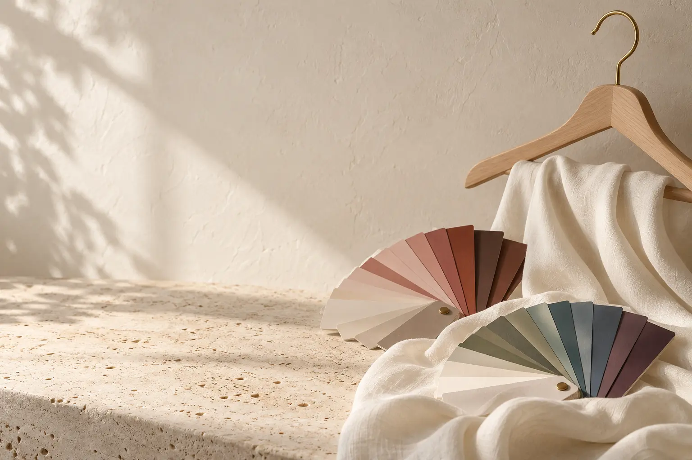
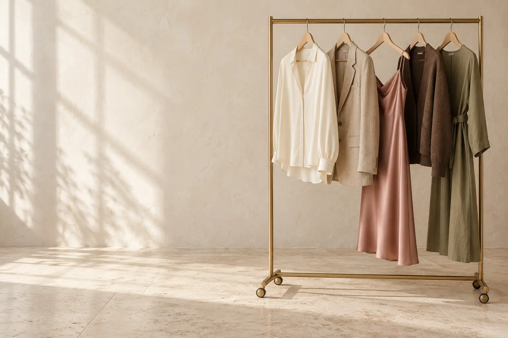
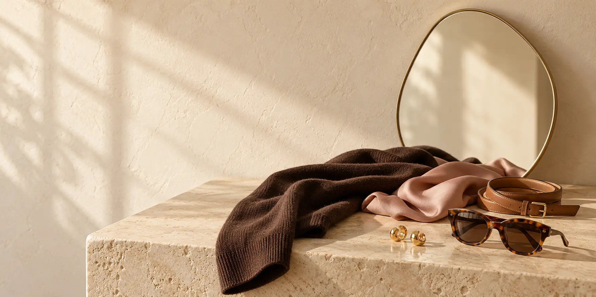
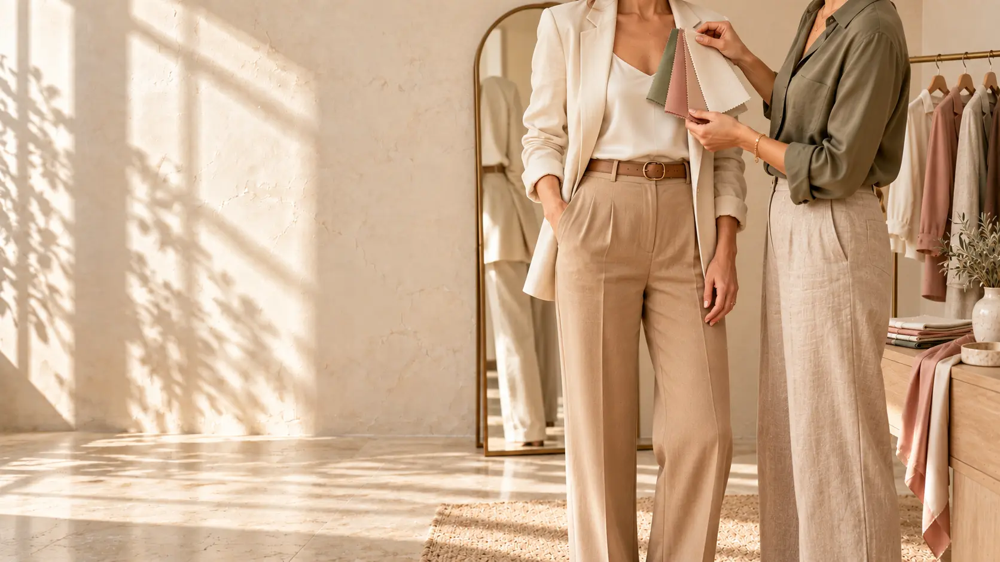
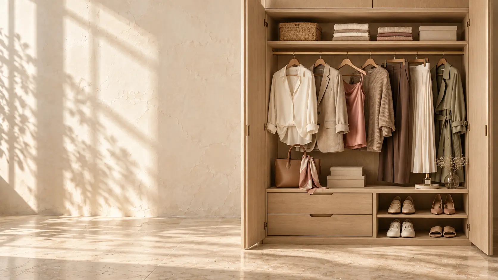
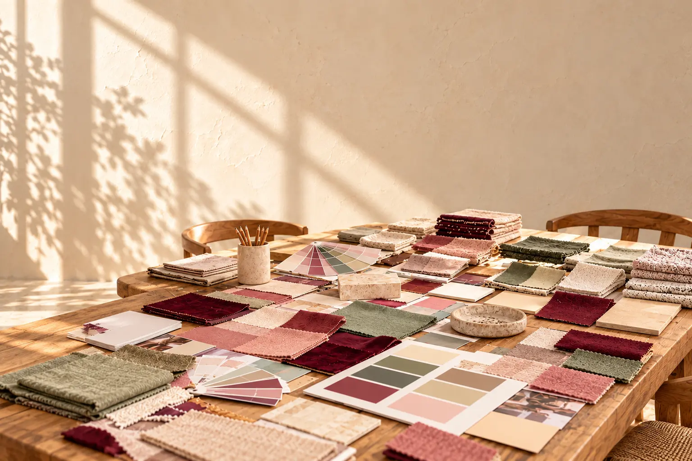
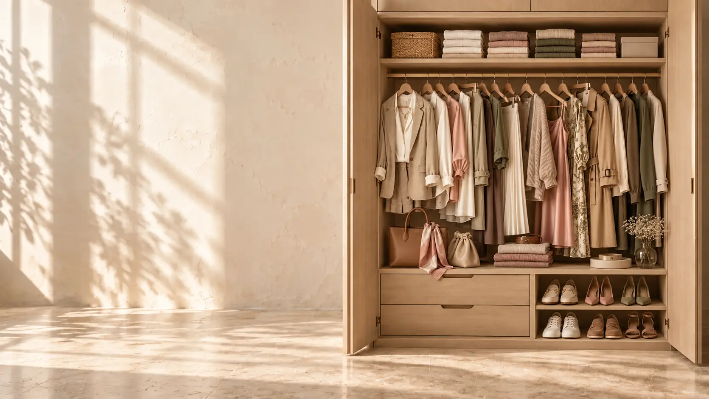
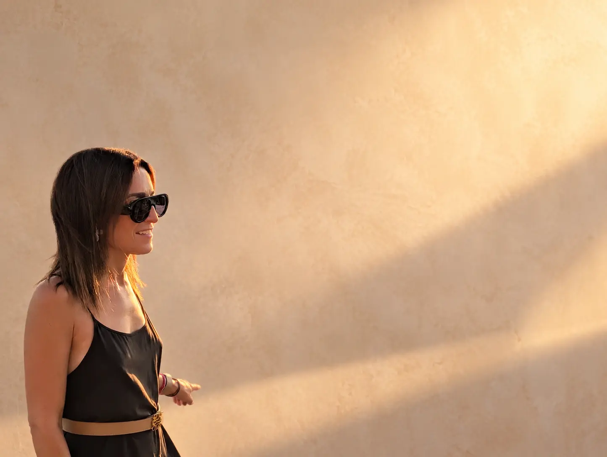

COLORIMETRÍA
Descubre los tonos que iluminan tu rostro y armonizan con tu piel, tus ojos y tu cabello. Aprende a combinarlos y a utilizarlos en ropa, maquillaje y accesorios.
SABER MÁS


Creo en una asesoría de imagen que te ayude a conocerte, potenciar lo que te hace única y disfrutar del momento de vestirte. Sin reglas rígidas. Sin dejar de ser tú.
Cuatro maneras de explorar tu imagen, descubrir nuevas posibilidades y encontrar un estilo que encaje contigo.

Descubre los tonos que iluminan tu rostro y armonizan con tu piel, tus ojos y tu cabello. Aprende a combinarlos y a utilizarlos en ropa, maquillaje y accesorios.
SABER MÁSTalleres y formaciones para aprender, experimentar y disfrutar del color. Experiencias prácticas y creativas para descubrir su poder, individualmente o en grupo.
SABER MÁS
Una mirada completa a tu imagen: color, silueta, prendas y estilo personal. Herramientas para saber qué te favorece y elegir con seguridad cada día.
SABER MÁS
Da una nueva vida a las prendas que ya tienes. Creamos combinaciones y looks adaptados a ti para vestir con más facilidad, creatividad y confianza.
SABER MÁSPequeños cambios en la forma de vestir pueden hacerte sentir enormemente tú.

El color se aprende, se experimenta y se disfruta.
Colour Lab es un espacio para explorar el color y sus posibilidades de manera cercana, dinámica y práctica. Un taller para aprender a mirarte con otros ojos, descubrir combinaciones y compartir una experiencia diferente.
¿Te gustaría organizar una sesión para un grupo o informarte sobre las formaciones? Cuéntame tu idea y creamos la experiencia adecuada.
CONSULTAR COLOUR LABMuchos más looks de los que imaginas, con tu propia ropa.
Si alguna vez has pensado «tengo el armario lleno y nada que ponerme», este servicio es para ti. Miraremos tus prendas con otros ojos y crearemos nuevas combinaciones adaptadas a tus gustos, tu estilo de vida y tu personalidad.
Para que abrir tu armario vuelva a ser sencillo, inspirador y divertido, sin necesidad de comprar por comprar.
QUIERO SABER MÁS
Una asesoría hecha a tu medida, desde lo que eres y lo que necesitas.
Nos conocemos y hablamos de tu estilo, tus inquietudes y lo que te gustaría conseguir.
Exploramos los colores, las prendas y las claves que mejor armonizan contigo.
Te llevas ideas prácticas para sentirte segura y disfrutar de tu imagen cada día.
Mi forma de entender la asesoría de imagen parte de una idea sencilla: vestir bien no consiste en seguir todas las tendencias, sino en reconocer lo que te hace especial.
Quiero ayudarte a encontrar tu propia forma de expresarte, descubrir lo que te favorece y hacer que cada elección te resulte más fácil y natural.
¿HABLAMOS?
Si no sabes qué servicio encaja mejor contigo, escríbeme. Estaré encantada de orientarte.
No. La idea es entender lo que te favorece y sacar más partido a las prendas que ya tienes.
La Colorimetría es una buena opción para descubrir tus tonos. Si quieres trabajar tu imagen de forma global, la Asesoría integral puede encajar mejor contigo. Podemos valorarlo juntas.
Sí. Escríbeme para contarme el tipo de grupo o encuentro que tienes en mente y preparar una propuesta.
Cuéntame qué tienes en mente. Me encantará ayudarte a encontrar la experiencia que mejor se adapte a ti.
ESCRÍBEME POR WHATSAPP